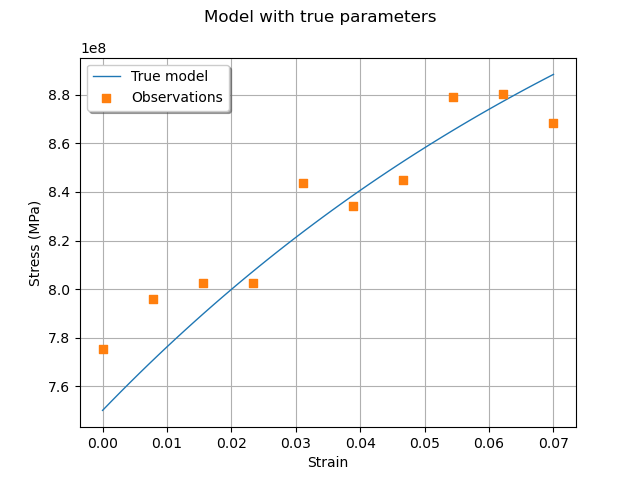

Note
Go to the end to download the full example code
Generate observations of the Chaboche mechanical model¶
In this example we present the simulation of noisy observations of the Chaboche model. A detailed explanation of this mechanical law is presented here. We show how to produce the observations that we use in the calibration model of Calibration of the Chaboche model.
Parameters to calibrate¶
The vector of parameters to calibrate is:

The true values of the parameters are:
 ,
, ,
, .
.
This is the set of true values that we wish to estimate with the calibration methods. In practical studies, these values are unknown.
Observations¶
In order to create a calibration problem, we make the hypothesis that the strain has the following distribution:

where  is the uniform distribution.
Moreover, we consider a Gaussian noise on the observed constraint:
is the uniform distribution.
Moreover, we consider a Gaussian noise on the observed constraint:

and we make the hypothesis that the observation errors are independent. We set the number of observations to:

We generate a Monte-Carlo sample with size  :
:
![\sigma_i = g(\epsilon_i,R,C,\gamma) + (\epsilon_\sigma)_i,]()
for  .
The observations are the pairs
.
The observations are the pairs  ,
i.e. each observation is a couple made of the strain and the corresponding stress.
,
i.e. each observation is a couple made of the strain and the corresponding stress.
Variables¶
In the particular situation where we want to calibrate this model, the following list presents which variables are observed input variables, input calibrated variables and observed output variables.
 : Input. Observed.
: Input. Observed. ,
,  ,
,  : Inputs. Calibrated.
: Inputs. Calibrated. : Output. Observed.
: Output. Observed.
import openturns as ot
import openturns.viewer as otv
from openturns.usecases import chaboche_model
ot.Log.Show(ot.Log.NONE)
Generate the observations¶
In practice, we generally use a data set which has been obtained from measurements. In this example, we generate the data using noisy observations of the physical model. In the next part, we will calibrate the parameters using the calibration algorithms.
Load the Chaboche model
cm = chaboche_model.ChabocheModel()
print("Inputs:", cm.model.getInputDescription())
print("Outputs:", cm.model.getOutputDescription())
Inputs: [Strain,R,C,Gamma]
Outputs: [Sigma]
We see that there are four inputs: Strain, R, C and Gamma and one output: Sigma. The Strain is observed on input and the stress Sigma is observed on output. Using these observations, we want to estimate the parameters R, C and Gamma.
We get the Chaboche model and the joint input distribution :
inputDistribution = cm.inputDistribution
print("inputDistribution:")
inputDistribution
inputDistribution:
Set the calibration parameters¶
In this part, we begin the calibration study.
Define the value of the reference values of the  parameter.
In the Bayesian framework, this is called the mean of the prior Gaussian
distribution. In the data assimilation framework, this is called the background.
parameter.
In the Bayesian framework, this is called the mean of the prior Gaussian
distribution. In the data assimilation framework, this is called the background.
thetaTrue = [cm.trueR, cm.trueC, cm.trueGamma]
print("theta True = ")
print(" R = %.2f (MPa)" % (cm.trueR / 1.0e6))
print(" C = %.2f (MPa)" % (cm.trueC / 1.0e6))
print(" Gamma = %.4f" % (cm.trueGamma))
theta True =
R = 750.00 (MPa)
C = 2750.00 (MPa)
Gamma = 10.0000
The following statement create the calibrated function from the model. The calibrated parameters R, C, Gamma are at indices 1, 2, 3 in the inputs arguments of the model.
calibratedIndices = [1, 2, 3]
mycf = ot.ParametricFunction(cm.model, calibratedIndices, thetaTrue)
Create a regular grid of the strains and evaluate the corresponding outputs.
nbobs = 10
step = (cm.strainMax - cm.strainMin) / (nbobs - 1)
rg = ot.RegularGrid(cm.strainMin, step, nbobs)
observedStrain = rg.getVertices()
predictedStress = mycf(observedStrain)
Generate observation noise. Here we consider a Gaussian observation noise, that we add to the output of the model.
stressObservationNoiseSigma = 10.0e6 # (Pa)
noiseSigma = ot.Normal(0.0, stressObservationNoiseSigma)
sampleNoiseStress = noiseSigma.getSample(nbobs)
observedStress = predictedStress + sampleNoiseStress
Gather the data into a sample.
data = ot.Sample(nbobs, 2)
data[:, 0] = observedStrain
data[:, 1] = observedStress
data.setDescription(["Strain", "Stress (Pa)"])
data
Then we plot the model and compare it to the observations.
graph = ot.Graph("Model with true parameters", "Strain", "Stress (MPa)", True)
# Plot the model
curve = mycf.draw(cm.strainMin, cm.strainMax, 50).getDrawable(0)
curve.setLegend("True model")
curve.setLineStyle(ot.ResourceMap.GetAsString("CalibrationResult-ObservationLineStyle"))
graph.add(curve)
# Plot the noisy observations
cloud = ot.Cloud(observedStrain, observedStress)
cloud.setLegend("Observations")
cloud.setPointStyle(
ot.ResourceMap.GetAsString("CalibrationResult-ObservationPointStyle")
)
graph.add(cloud)
graph.setColors(ot.Drawable.BuildDefaultPalette(2))
graph.setLegendPosition("topleft")
view = otv.View(graph)

We see that the observations are relatively noisy, but that the trend is clear: this shows that it may be possible to fit the model. At this point, we have a data set that we can use for calibration and a model to calibrate.
otv.View.ShowAll()